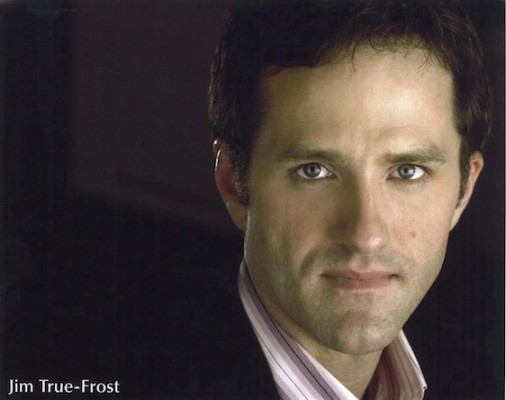
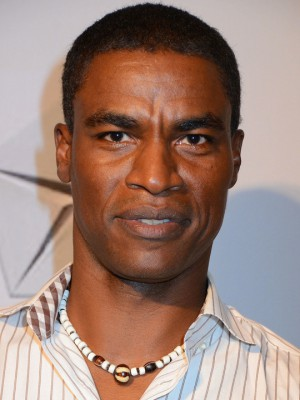

#8433 Memories to go - vergeben und ... vergessen
Alternativ: Diminished Capacity

 IMDB-Wertung: 5.7 / 10
IMDB-Wertung: 5.7 / 10  Metascore: 0
Metascore: 0 
Journalist Cooper leidet unter zeitweiligen Gedächtnisaussetzern und nimmt sich eine Auszeit vom Job. In seinem Heimatort nimmt sein Leben eine rasante Wending. Zum ersten Mal in seinem Leben wächst Cooper über sich hinaus und lässt nichts unversucht sein Geld und die Liebe zurückzuholen.
Jahr: 2008
Dauer: 88 Minuten
FSK: 12
Land: USA Studio: IFC FilmsTonspuren: DTS - ,
Untertitel:
Auflösung: 1080p (1920x1080) Größe: 7075 MB
Genre: Komödie
Regisseur: Terry Kinney
Drehbuch: Doug Bost
Soundtrack: Robert Burger
Darsteller:
 Matthew Broderick als Cooper
Matthew Broderick als Cooper Virginia Madsen als Charlotte
Virginia Madsen als Charlotte Alan Alda als Uncle Rollie Zerbs
Alan Alda als Uncle Rollie Zerbs Jimmy Bennett als Dillon
Jimmy Bennett als Dillon Louis C.K. als Stan
Louis C.K. als Stan-  Jim True-Frost als Donny Prine
 Dylan Baker als Mad Dog McClure
Dylan Baker als Mad Dog McClure Bobby Cannavale als Lee Vivyan
Bobby Cannavale als Lee Vivyan- Jeff Perry als Casey Dean
 Lois Smith als Belle Tyke
Lois Smith als Belle Tyke Tom Aldredge als Wendell Kendall
Tom Aldredge als Wendell Kendall Chris Bauer als Lloyd
Chris Bauer als Lloyd- Carolyn Baeumler als Diane McClure
 P.J. Brown als Reese
P.J. Brown als Reese- Michael Wright als McCormick
-  Charles Parnell als Merkel Guard #2
- Danton Stone als Police Officer
- Liz Walsh als Baseball Card Trader
 Harry L. Seddon als Card Buyer (uncredited)
Harry L. Seddon als Card Buyer (uncredited)- Evan Shafran als Baseball Card Collector (uncredited)
- Justin Michael Woods als Card Buyer (uncredited)
- Ray Thomas als Gordy
- Heidi Neurauter als Irene Sasso
- Doug Bost als Customer
- Gentry Miller als Tribune Security Guard
- Chris Collins als Sports Announcer
- David Corbett als Chicago cubs security 3
- Bhavna de Montebello als Dr. Gupta
- Patrick Fitzgerald als Merkel Guard #1
- Brad Haugen als Chicago cubs security 1
- Joseph Kwasny als Chicago cubs security 2
- Mary Jo Mandula als Tribune employee 1
- Paul Mixon als Tribune employee 2
- Zsofia Otvos als Riverwalk girl 1
- Angel Perez als Extra
- David Martin Rose als Frank 'Wildfire' Schulte
- Jack Sabato als Troy Bannister
- Karla Strum als Riverwalk girl 2
- Jim Coe als Convention Patron (uncredited)
Datei: X:\2008(G-M)\Memories to go - vergeben und ... vergessen (2008, FSK12, 1920x1080).mkv seit 02.03.2018
Festplatte: HD 2008(G-Z)-2009(A-F)
 Es gibt insgesamt 73 Filme in der Gruppe '2008(G-M)'
Es gibt insgesamt 73 Filme in der Gruppe '2008(G-M)'